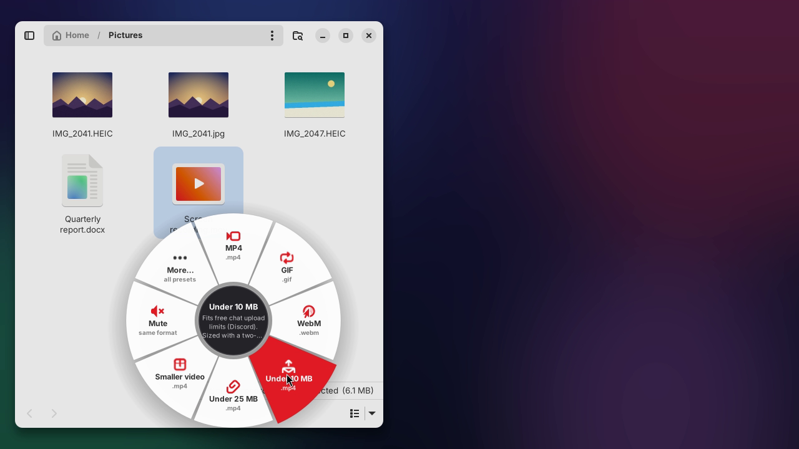
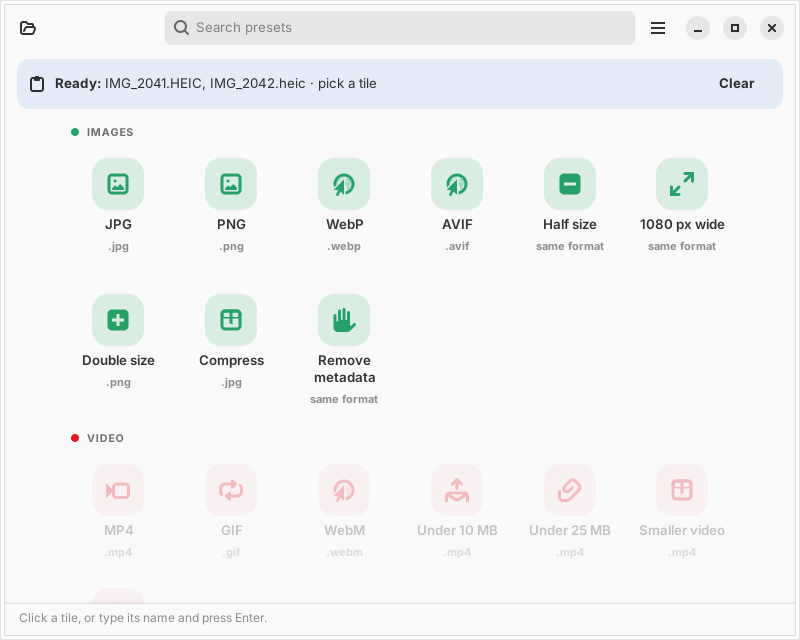
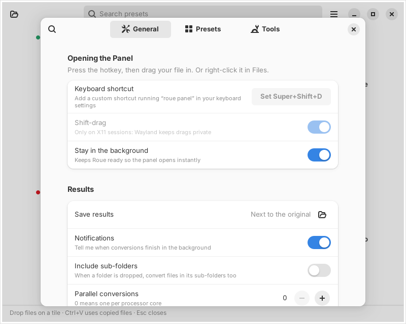

The wheel
A hotkey opens the wheel. Drop a file on a slice, or copy files in Files and click one. It only shows presets that fit, and More… opens every preset. On X11, hold Shift while dragging and it opens around the pointer.
New Free file converter for the Linux desktop
Press Super Shift D, drop a file on a slice of the wheel, done. Roue turns HEIC into JPG, screen recordings into tiny MP4s, videos into GIFs and documents into PDFs, right next to the original. No dialogs, no uploads.
wget -qO- https://guilyx.github.io/roue/install.sh | sh
Ubuntu 22.04+ and Debian 12+. Updates arrive through Software Updater. Other distributions: install from source with pipx. Version 0.2.2 · GPL-3.0-or-later.
See it in action
A phone photo to JPG with the hotkey's wheel, a screen recording under 10 MB from the Files menu, a WebP with Shift-drag, and a GIF from the terminal. Recorded live, nothing staged.
How it works
Use whichever is closest. They share the same presets, the same history and the same rule: results land next to the original.
A hotkey opens the wheel. Drop a file on a slice, or copy files in Files and click one. It only shows presets that fit, and More… opens every preset. On X11, hold Shift while dragging and it opens around the pointer.
Select one photo or forty, right-click, Convert with Roue…. The wheel opens right at the pointer, with the presets that fit everything you selected. One notification at the end.
Every preset is a command: roue jpg *.HEIC. Folders, parallel jobs, JSON output and clear exit codes, for scripts and power users.
Made for the everyday
No more "convert mov to mp4 linux" at 11 pm. Each one is a single drop.
HEIC files nothing else opens become JPGs that open everywhere.
Preset: JPG
A two-pass encode that lands under 10 MB, sized from the video's length.
Preset: Under 10 MB
Drops GPS, camera and date details before you share a photo.
Preset: Remove metadata
15 fps, palette-optimised, loops forever. Looks good, stays small.
Preset: GIF
Ghostscript shrinks image-heavy PDFs. Kept only if it's actually smaller.
Preset: Compress PDF
Pull the soundtrack out of a talk or a clip, or turn a recording into a tiny Opus voice note.
Preset: MP3
Built in
Each preset does one thing well. Turn off the ones you never use, tweak the rest, or write your own.
.jpg.png.webp.avifsamesame.png.jpgsame.mp4.gif.webm.mp4.mp4.mp4same.mp3.opus.wav.flacsame.pdf.docx.html.pdfpages · .png.txtTutorial
On Ubuntu or Debian, run this in a terminal. It asks for your password, installs Roue and sets up the hotkey and the Files menu:
wget -qO- https://guilyx.github.io/roue/install.sh | shPrefer the .deb? Get it from Releases; the first launch walks you through setup.
Press Super Shift D. Each slice is a preset; drag a file over it and the slices change to the ones that fit.
Drop a file on a slice. Or select files in Files, press Ctrl C, open the wheel and click a slice.
IMG_2041.HEIC gives IMG_2041.jpg, and a notification says when it's ready. Changed your mind? roue undo moves it to the trash.
Screenshots
Built with GTK 4 and libadwaita. Follows your light or dark style.



Make it yours
Drop a file in ~/.config/roue/presets/ and a new preset joins the wheel, the panel and the command line. Use the built-in image, video, document and PDF backends, or wrap any tool with {in} and {out}.
# ~/.config/roue/presets/thumbnail.yaml
id: thumbnail
name: Thumbnail
description: 320 px wide WebP, for blog posts.
group: image
accepts: ["image/*"]
output_ext: webp
suffix: " (thumb)"
backend: image
params:
width: 320
quality: 80Wayland & X11
Wayland keeps each app's drags private, by design. Roue respects that instead of fighting it, and gives X11 a little extra magic.
Roue runs FFmpeg, libvips, Ghostscript, Pandoc and LibreOffice on your machine. It doesn't open a single network connection: no uploads, no accounts, no analytics. Turn the Wi-Fi off and it works exactly the same.
FAQ
Next to the original, with the same name and the new extension: IMG_2041.HEIC gives IMG_2041.jpg. You can pick a single output folder in Preferences instead. If the original's folder is read-only, results go to Downloads.
No. If photo.jpg exists, you get photo (2).jpg. Results are written to a hidden temporary folder first and moved into place in a way that refuses to replace anything. Undo moves results to the trash; nothing is ever deleted.
Any Linux with Python 3.10+ and GTK 4.6+ with libadwaita 1.1+: Ubuntu 22.04, Debian 12, Fedora 40 and newer. The hotkey is set up automatically on GNOME; on KDE, Xfce and others you add it in your keyboard settings in a few clicks.
Wayland doesn't let one app see another app's drags. That's a privacy feature, not a bug. On Wayland, use the Files menu, the hotkey, or copy-then-click.
Your libheif needs its HEVC decoder: sudo apt install libheif-plugin-libde265. Run roue doctor to check every tool at once.
Yes. Roue is free software under the GPL-3.0-or-later license. No paid tier, no ads, no tracking.